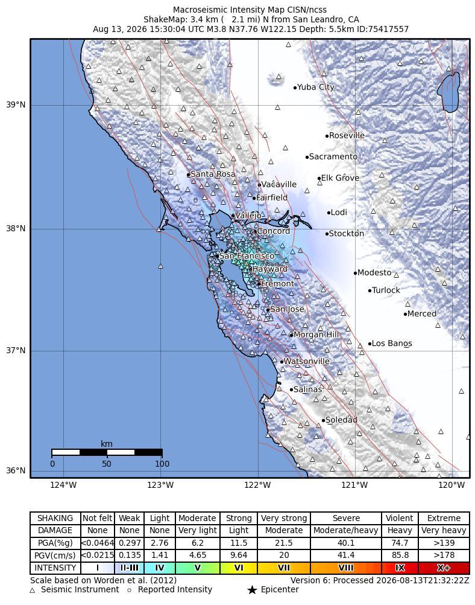
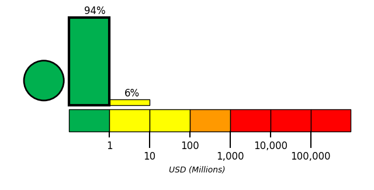

Introduction
On August 13, 2026, at approximately 08:30 local time (America/Los_Angeles; 2026-08-13 15:30 UTC), a magnitude 3.84 earthquake, with a reported depth of 5.55 km, occurred 3 km N of San Leandro, CA. The USGS epicenter was at 37.7552° latitude and -122.15° longitude.
The Hayward Fault is a mostly right-lateral, strike-slip fault with approximately 5 mm/yr (1/5 inch/year) of creep. The 2003 Working Group for California Earthquake Probability, in agreement with previous working groups going back to 1990, assigned a slip rate on the Hayward Fault to be about 9 mm/yr (1/3 inch/year). This implies that approximately 4 mm/yr of motion is taken up in a stick-slip fashion, leading to the generation of earthquakes.
The Hayward Fault runs from San Pablo Bay in the north to Fremont in the south, passing through the cities of Berkeley, Oakland, Hayward, and Fremont. South of Fremont the fault branches into a complex set of surface faults that connect the Hayward Fault to the central part of the Calaveras Fault. The Hayward and Calaveras Faults may have a simpler connection at depths more than 5 km (3 miles), joining in the subsurface just south of the Calaveras Reservoir (site of the October 30, 2007 M5.4 Alum Rock earthquake). The Hayward Fault may be segmented into a northern and southern segment in the vicinity of Berkeley or Oakland.
The most recent major earthquake on the Hayward Fault occurred at 7:53 AM on 21 October 1868 with an estimated magnitude of??. With an epicenter in the heart of the Bay Area, then having the largest population on the west coast with a total of 260,000 residents, this earthquake was one of the most destructive in California history, and remains the nation's 12th most lethal earthquake. Property loss was extensive and 30 people were killed. Five deaths were reported in San Francisco, out of a population of 150,000, where the total property loss was estimated to be $350,000 (in 1868 dollars). This earthquake was known as the "great San Francisco earthquake" until the magnitude 7.9 shock on the San Andreas Fault on 18 April 1906.
Geologic studies at Tule Pond (Fremont) on the southern segment of the Hayward Fault have shown that the average interval between the past 5 earthquakes has been 140 ± 50 years. The average interval of the past 11 earthquakes on this segment of the fault is 170 ± 80 years.
The 2003 Working Group for California Earthquake Probability assigned a 27% probability that the Hayward-Rodgers Creek Fault system would produce a magnitude 6.7 or larger earthquake in the next 30 years.

Building Damage
The USGS rated shaking in Oakland, San Leandro, and Alameda as light; locally it was noticeable indoors and strong enough to rattle dishes and windows [1][2]. Shaking was felt more widely across the Bay Area, including San Francisco [1]. One selected report said no initial damage was reported from the magnitude 3.8 mainshock, and no damage was reported from the magnitude 3.0 and 2.8 aftershocks [3].
Infrastructure Impact
BART temporarily held trains, then operated them at reduced speeds while crews completed track safety inspections [4]. Riders were advised to expect delays of about 20 minutes [2]. A report citing BART described the checks as part of its Earthquake Emergency Response Plan; it said the plan automatically slows trains and holds them while operators visually inspect track [5].
Resilience and Recovery
By midday Thursday, more than 7,600 people had submitted reports to the USGS, spanning the North Bay to Santa Cruz and east toward Sacramento and Stockton [6]. Weak shaking was reported farther from the epicentral area, including in San Francisco, San Mateo, Berkeley, San José, Santa Cruz, and San Rafael [7].
PAGER Estimates
USGS PAGER tool estimated the fatalities to be in the green alert level, which is most likely less than 1 with a probability of 94%.
USGS PAGER tool estimated the economic loss to be in the green alert level, which is most likely less than 1 million dollars with a probability of 94%.


References
- [1] democrata.es - https://www.democrata.es/en/international/a-magnitude-3-8-earthquake-shakes-the-san-francisco-area-and-causes-delays-in-transportation
- [2] us.headtopics.com - https://us.headtopics.com/news/magnitude-3-8-earthquake-centered-in-oakland-shakes-86593665
- [3] ts2.tech - https://ts2.tech/en/pge-stock-lags-sp-500-by-2-2-points-as-bay-area-quake-draws-50000-searches
- [4] jang.com.pk - https://jang.com.pk/en/71013-38-magnitude-earthquake-hits-san-leandro-aftershocks-rattle-bay-area-news
- [5] hoodline.com - https://hoodline.com/2026/08/magnitude-3-9-quake-near-san-leandro-jolts-bay-area-slows-bart-trains
- [6] ntd.com - https://www.ntd.com/3-8-magnitude-earthquake-shakes-san-francisco-bay-area_1166163.html
- [7] dnyuz.com - https://dnyuz.com/2026/08/13/magnitude-3-8-earthquake-centered-in-oakland-shakes-northern-california